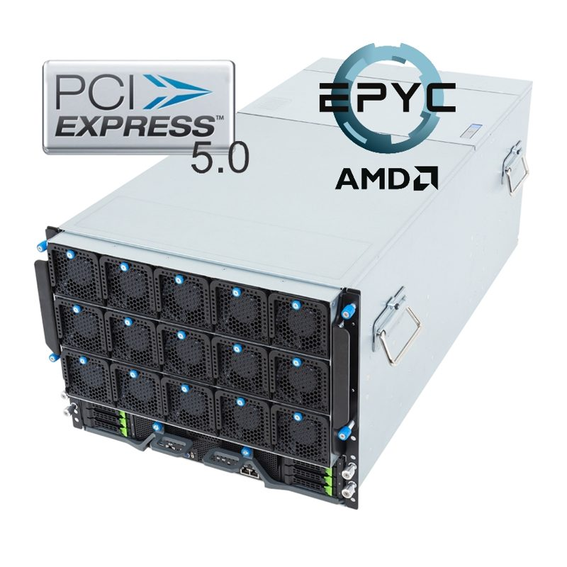
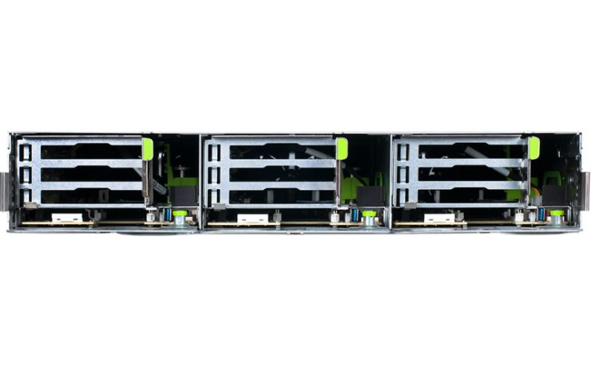
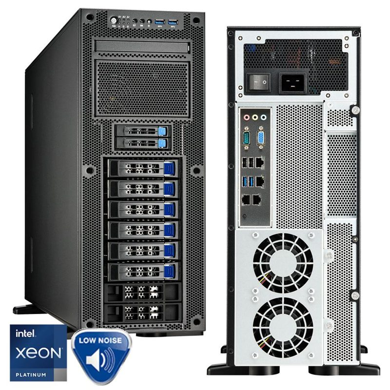
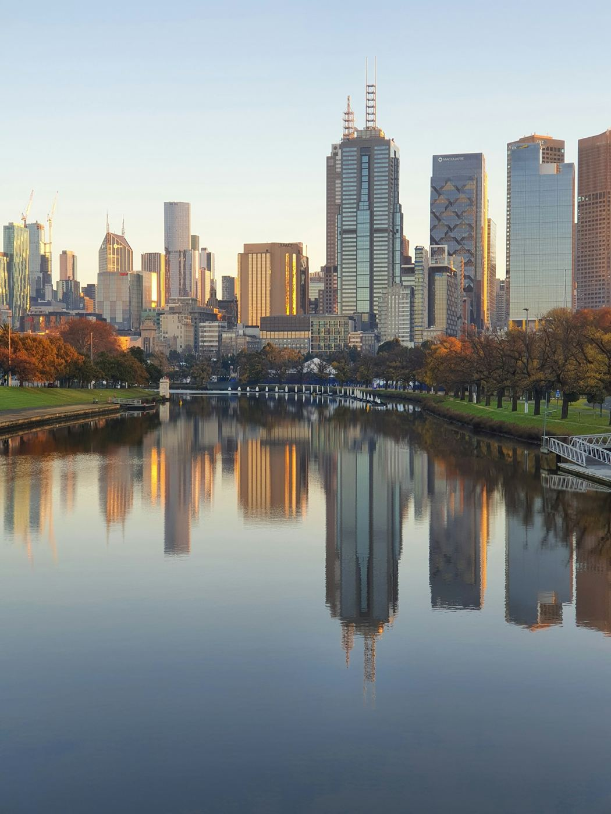
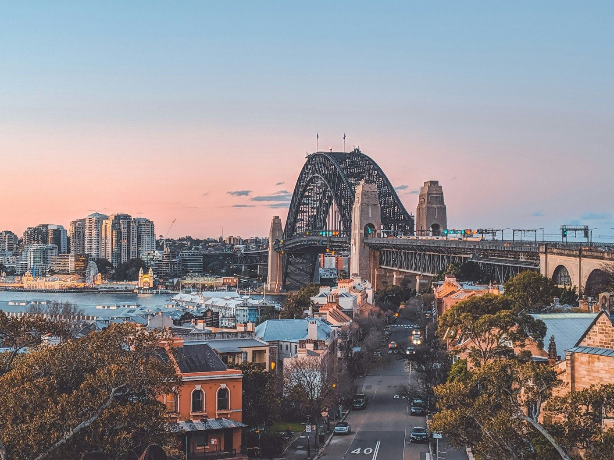
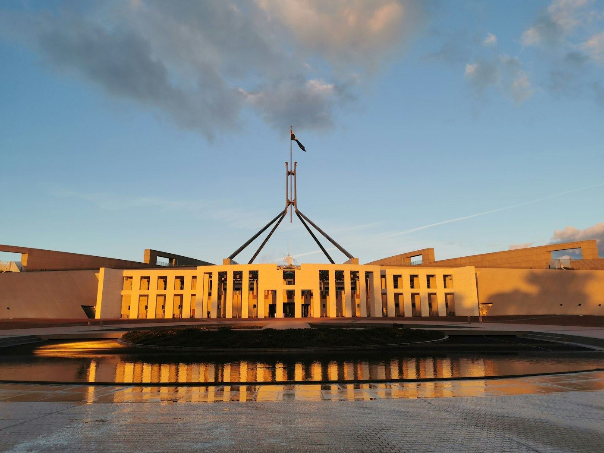

Australian AI infrastructure, built from the grid to the GPU.
QORINAI develops, builds and operates AI data centres — land and power, design and construction, hardware, cluster deployment, 24×7 GPU operations and a sovereign cloud on top. Every link of the chain, one accountable team.
Flagship project · Victoria
A gigawatt AI campus designed around its power.
CAMPUS FLY-THROUGH · MASTERPLAN VISUALISATION · INDICATIVE
A greenfield freehold beside a 500 kV corridor in Melbourne's northern growth corridor, with a formal 1,000 MW transmission response already in hand. Four repeatable 250 MW modules, a new 500 kV terminal station, gas firming and 500 MWh of battery storage — the power process was run first, so the campus can be.
The AIDC chain
Eight links from the transmission line to the token.
Most AI projects stall between the substation and the GPU — four companies, four contracts, nobody accountable for the gap. QORINAI is organised so that the gap doesn't exist.

- 01
Land & power
Sites beside EHV corridors, formal connection enquiries, gas firming and battery storage.
4 MVA → 1 GW - 02
Design
Tier III+ MEP, three cooling tiers, 220 / 33 kV reticulation, design PUE ≤ 1.2.
250 kW per rack · Rubin-ready - 03
Build
Transportable 2.5 MW modules, owner-managed subcontracting, phased power blocks.
10–50 MW blocks - 04
Hardware
HGX B300, GB300 NVL72 and AMD Instinct systems configured and tested in Australia via Hyperscalers.
Australian-built · AU warranty - 05
Deploy
Rack, cable, InfiniBand XDR fabrics, NCCL / HPL burn-in and thermal soak.
Handed over benchmarked - 06
Operate
24×7 GPU fleet management, firmware lifecycle, RMA with hot spares, monthly reporting.
99.9 % node SLA - 07
Host
High-density colocation, capacity hosting for GPU owners, smart hands under 15 minutes.
30–250 kW per rack - 08
Compute
Sovereign GPU cloud, 100+ open-weight models, private cloud — billed in AUD.
No training on your data
Why QORINAI
Australia has no shortage of planned data centres. It has a shortage of energisable land, liquid-cooled halls and people who can run a GPU fleet. So we built a company around all three.
- POWER FIRSTThe connection before the concrete
Transmission and distribution enquiries, system-strength studies and three supply layers — grid, interim distribution, on-site generation — before a hall is designed.
- DENSITY BY DESIGN250 kW liquid-cooled racks from day one
Direct-to-chip cooling, rear-door heat exchange and air halls in every campus, so the next NVIDIA or AMD generation is a rack swap, not a rebuild.
- OWNER-MANAGEDNo master EPC in the middle
Electrical, mechanical, liquid-cooling and compliance trades engaged directly. The margin and the know-how stay with the project.
- SOVEREIGNAustralian owned, staffed and hosted
No prompt caching, no training on your data, no offshore approval between you and your hardware.
- SUPPLY CERTAINTYA manufacturer on the share register
Hyperscalers, Australia's open-OEM manufacturer, is our strategic shareholder — local stock, Australian warranty, lab test drives.
- ONE OPERATORThe team that designed the loop answers the 2 a.m. alert
One contract, one SLA, one phone number from build through operations.
Hardware
The right accelerator for every AI workload.
Configured, tested and warranted in Australia through our strategic shareholder Hyperscalers — configured, burned in and warranted in Australia.

NVIDIA HGX B300 8-GPU
8× Blackwell Ultra on one NVLink domain, dual Xeon 6 6767P, ConnectX-8 800G fabric.
GS7 B300 · G894-SD3-AAX7NVIDIA GB300 NVL72
72 GPUs, 36 Grace CPUs, one NVLink domain, ~21 TB HBM3e, 130 kW liquid-cooled.
DLC · 415 V BUSWAY
AMD Instinct MI325X 8-GPU
8× MI325X, 256 GB HBM3e each — 2 TB per node on EPYC 9005 Turin.
S8MT · D75T-7U
InfiniBand XDR & 800G Ethernet
Quantum-X800, Spectrum-X, ONIE bare-metal switches 1–400G, NVMe storage.
1G → 800GServices
Build with us, host with us, or rent the compute.
Infrastructure development
Design & build, power & grid, energy & microgrid, modular data centres, liquid cooling, commissioning.
1 MW → GWData centre services
High-density colocation, capacity hosting, private suites, cross-connects, dark fibre, IP transit, smart hands.
30–250 kW · A+BCompute & cloud
GPU compute and clusters, GPU-as-a-Service, 100+ models, bare metal, VMs, private cloud, storage, DR, HPC, VFX.
AUD BILLINGManaged & professional
GPU fleet management, managed services, professional services, Lab-as-a-Service, 24×7 Australian support.
99.9 % NODE SLATrack record
Delivered by the people who now deliver for QORINAI.
Our delivery partners and engineering leads have built and operated high-density compute in Australia since 2008 — modular sites beside power stations, inner-city colocation, liquid-cooled GPU clusters and a ~14 MW high-density build.
Strategic shareholder
Backed by Australia's open-OEM server manufacturer.
Hyperscalers has designed, manufactured and supported open-OEM servers, storage and networking in Australia since 2014 — the hyperscale-grade hardware behind cloud providers, telcos and enterprise IT. As QORINAI's strategic shareholder it gives every deployment local manufacturing, local stock, a full Australian warranty and a lab to test-drive configurations before purchase.

Servers
GPU, PCIe Gen5 Intel / AMD, hyper-converged, 1U–10U.

Storage & network
JBODs, storage servers, ONIE switches 1G–400G.

OCP hyperscale
Rackgo M / X / X-RSD open-rack compute and storage.

HyperLabs
Lab-as-a-Service, IP-appliance design, configurator.
Where we are
Sydney-led, national by design.

Engineering · VictoriaMelbourne
Engineering and the flagship gigawatt-class campus programme in the state's north.

Head office · NSWSydney
Headquarters at A/200 Bourke Rd, Alexandria. Partner-delivered high-density, modular and liquid-cooled projects across Greater Sydney and regional NSW.

Hardware & lab · ACTCanberra
Hyperscalers' manufacturing, local stock and HyperLabs test-drive facility.
Tell us about the megawatts and the models.
Land and a grid connection, a fleet of GPUs with nowhere to go, or a model with no compute — an engineer replies within one business day.